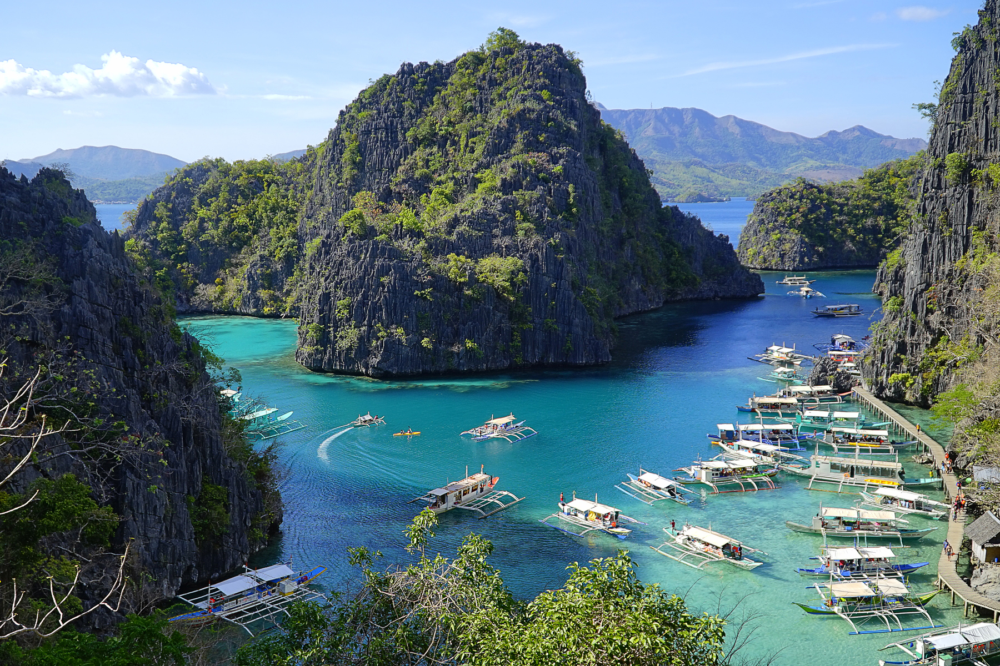
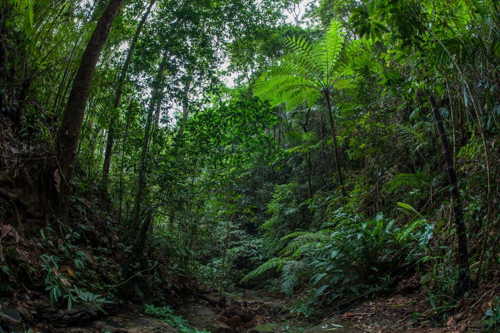
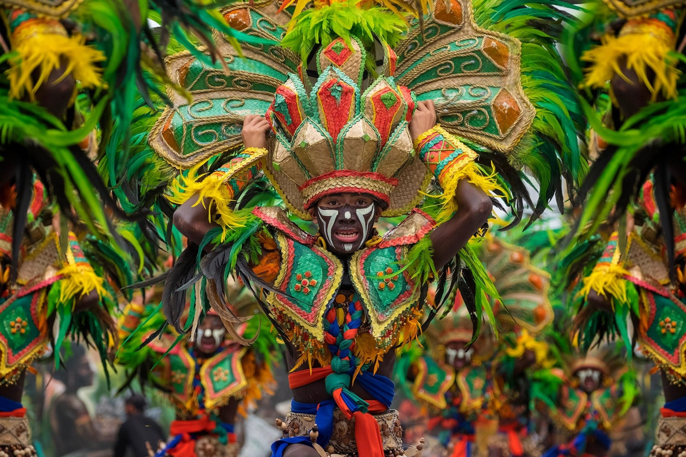
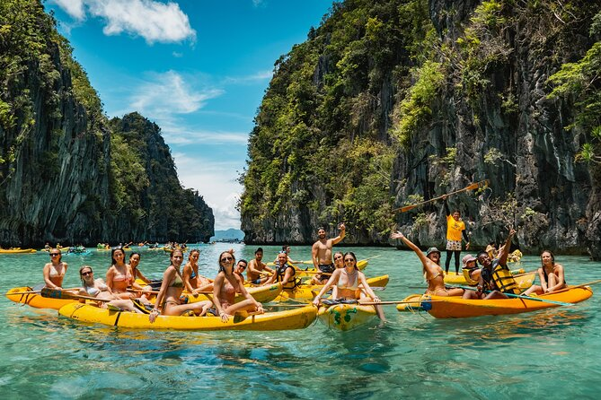
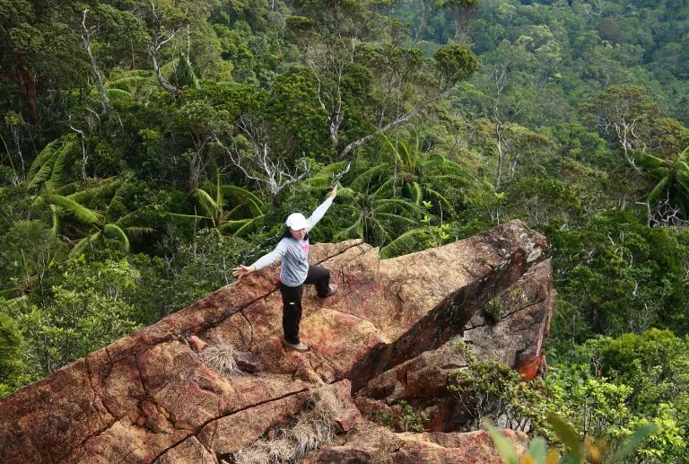
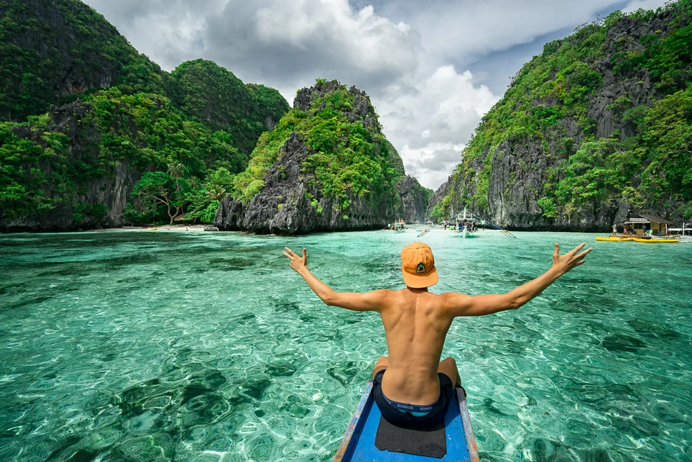

Discover Palawan
Every island, an adventure — the last frontier of the Philippines awaits.
Start Exploring →
Palawan is a long, narrow island province in the southwestern Philippines, stretching between the South China Sea and the Sulu Sea. Celebrated as one of the most beautiful islands on Earth, it is a place of extraordinary natural diversity — from ancient underground rivers and limestone karst seascapes to pristine coral reefs and dense tropical rainforests.
Whether you seek adventure on the water, peace in a secluded cove, or a deep connection with indigenous culture, Palawan delivers it all with breathtaking generosity.
A world of wonders compressed into one extraordinary province.

Over 1,700 islands, islets, and cays — each with its own character, its own secret cove, its own shade of turquoise.

Tubbataha Reef, Coron's WWII wrecks, and El Nido's vibrant coral gardens rank among the finest dive sites in Asia.

Palawan's forests shelter unique wildlife found nowhere else on Earth, including the rare Palawan bearcat and Philippine cockatoo.

The indigenous Batak, Tagbanua, and Palaw'an peoples preserve traditions, crafts, and stories stretching back thousands of years.
Six remarkable places, each a world of its own.
Adventures for every kind of traveller.

Sail between emerald lagoons and secret beaches on a traditional banca boat.

Discover vibrant reefs, WWII shipwrecks, and marine life of extraordinary variety.

Paddle through mangroves, sea caves, and coastal lagoons at your own pace.

Climb through jungle trails with rewards of panoramic ocean and island views.

Meet indigenous communities and learn traditions passed down for generations.

El Nido is a municipality in the northernmost tip of Palawan, famous for its towering limestone karst formations, crystal-clear lagoons, and diverse marine life. Often called one of the most beautiful places on Earth, it draws travellers from every corner of the globe who come to experience its dramatic seascapes and unhurried island rhythm.
Plan your journey through Palawan's islands, reefs, and rainforests.
Plan Your Trip →